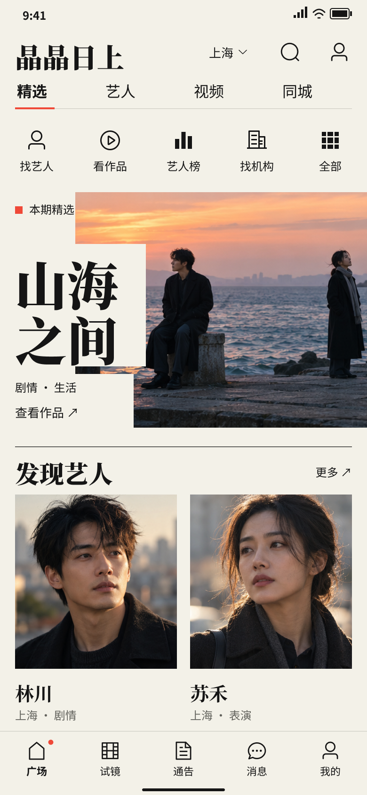
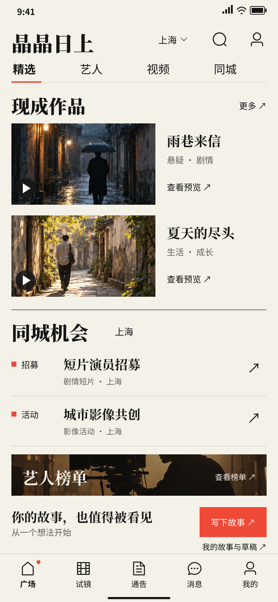
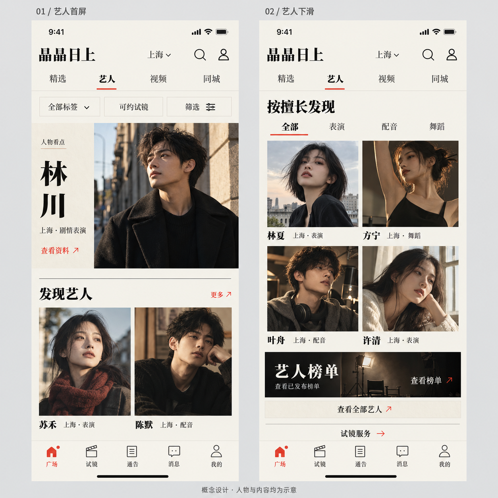
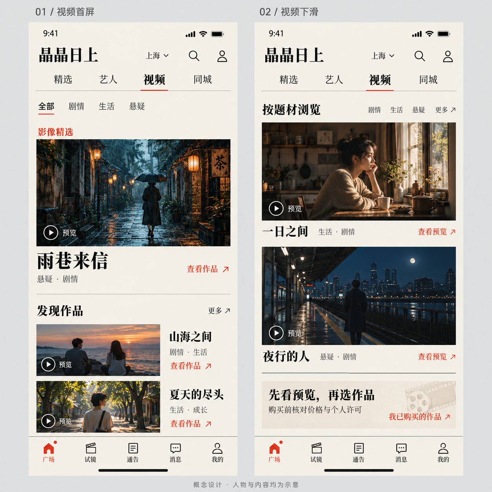
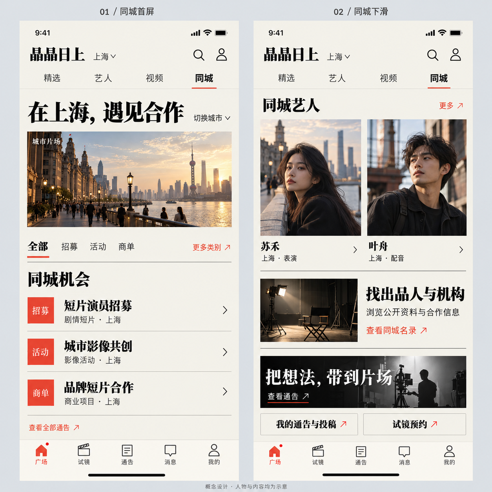
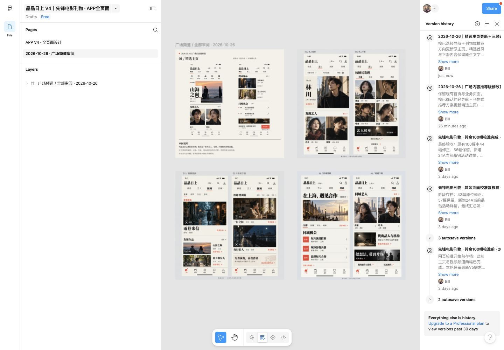

2026.10.26 · 设计审阅
精选主页已更新原 Figma 文件。艺人、视频、同城各补齐首屏与下滑视图，供审阅栏目安排与视觉方向。
人物、作品、活动和影像均为示意。本轮交付设计稿，前端代码尚未按此方案修改。
已更新 · 可编辑图层
图标入口、刊物封面与发现艺人；下滑后继续浏览现成作品、同城机会、榜单和写故事入口。


Image Gen 概念图 · 待审阅
人物看点、公开资料、标签筛选、肖像网格和榜单入口。

横幅影片、题材浏览、获准预览、作品详情与已购入口，购买和许可沿用原流程。

城市切换、分类通告、同城艺人、出品人与机构名录，以及本人投稿与试镜入口。

已在远端版本历史核对修改前和修改后两个命名版本。

设计交接记录 · 需求与数据来源待确认项